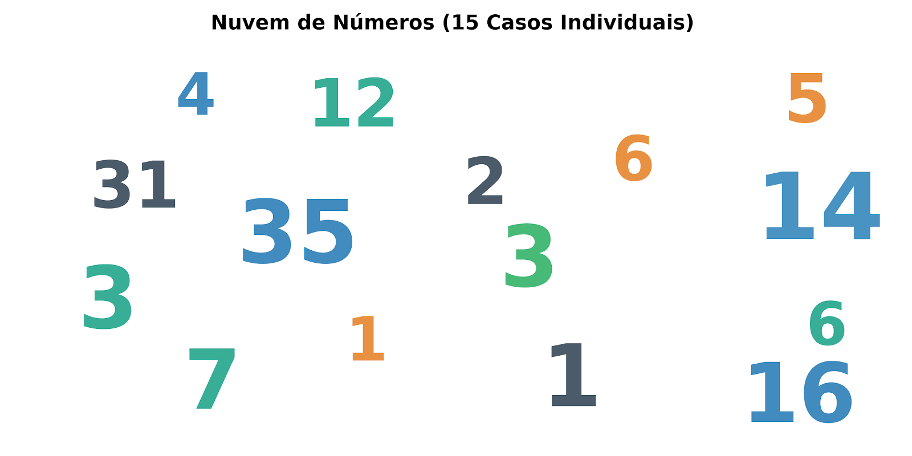
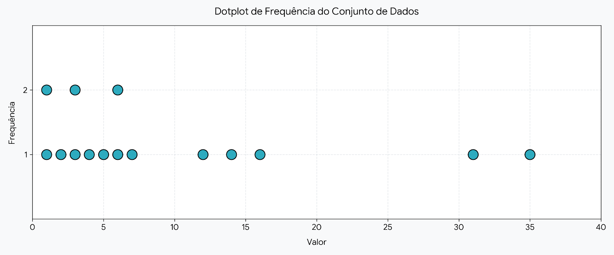
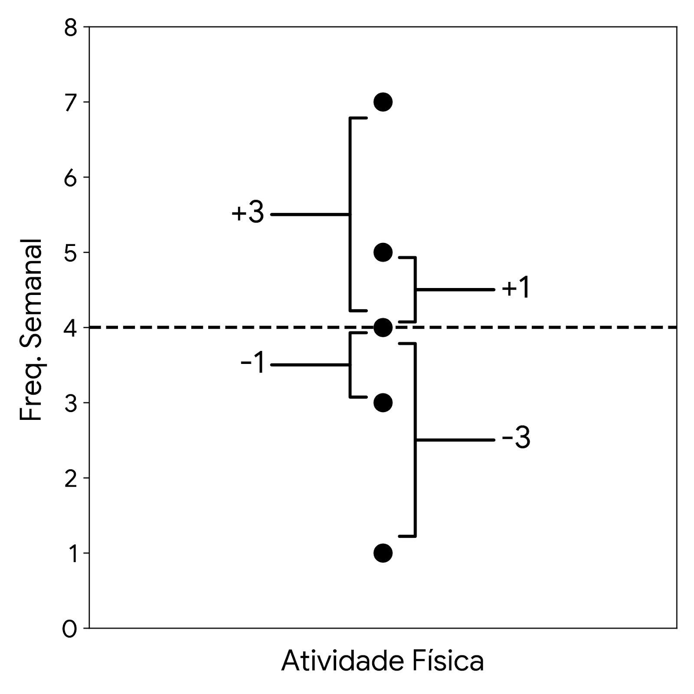

Módulo 2: Medidas de Tendência Central e Dispersão
Antes de mergulharmos no aprendizado das medidas de tendência central e das medidas de dispersão, precisamos dominar a operação matemática que é o "motor" de todas essas medidas: o Somatório.
Na bioestatística, frequentemente lidamos com amostras de dezenas, centenas ou milhares de pacientes. O somatório é a forma elegante e compacta de dizer "some todos esses valores" sem precisar escrever uma equação infinita.
A notação de somatório utiliza a letra grega Sigma maiúscula (Σ). Veja como desmembrar seus componentes, considerando sempre uma amostra de 5 observações (n = 5) para nossos exemplos:
Na bioestatística (especialmente ao calcular a variância), raramente somamos apenas o xi puro. Muitas vezes precisamos realizar operações algébricas antes de somar. Compreender a ordem das operações é vital para não errar os cálculos.
Antes de avançarmos, observe a diferença crucial que um parênteses faz na instrução estatística. A regra de ouro é: o somatório afeta apenas o que está imediatamente à sua frente ou dentro do parênteses.
Σ (xi + 22)Soma-se 4 (pois 22 = 4) ao dado de cada uma das 5 linhas e, em seguida, realiza-se o somatório geral.Σ (xi + 2)2Atenção redobrada aqui: Primeiro soma-se 2 ao dado, eleva-se esse resultado ao quadrado, e apenas depois que você fez isso para todas as 5 observações é que se soma tudo. Esta lógica é a base estrutural para entender o cálculo do Desvio Padrão!Σ (xi + 2xi)Algebricamente, xi + 2xi = 3xi. A instrução é: multiplique o dado de cada uma das 5 linhas por 3 e depois faça a soma total.Σ (xi + 2xi2)Primeiro, eleva-se o dado ao quadrado (xi2), multiplica-se isso por 2, soma-se com o valor original (xi) e só então passa-se para a próxima linha até completar as 5. O somatório agrega todos esses resultados finais.Σ (xi + 2xi)2Simplificando a expressão dentro do parênteses temos (3xi)2, o que resulta em 9xi2. Portanto, eleva-se o dado ao quadrado, multiplica-se por 9 e depois soma-se todos os 5 valores.Vamos aplicar a notação utilizando os 5 primeiros dados da nossa amostra de dispersão (frequências: 12, 3, 1, 16, 35). Como nossa amostra tem 5 elementos, nosso n = 5.
Os valores iniciais já estão preenchidos com os dados da nossa amostra, mas sinta-se livre para alterá-los. Clique em calcular para verificar o processamento estatístico da sua nova amostra.
Agora que já dominamos o motor matemático (o Somatório), vamos iniciar nossa jornada pelas Medidas de Tendência Central.
Para isso, voltaremos à nossa base de notificação de Leishmaniose Visceral. Desta vez, faremos um recorte amostral focado exclusivamente nos pacientes com escolaridade de 1ª a 4ª série incompleta e 4ª série completa. Observe a tabela abaixo e localize de onde extrairemos nossos dados.
| Faixa Etária | Ign/Branco | Analfabeto | 1ª a 4ª série inc. | 4ª série comp. | 5ª a 8ª série inc. | Outros... | Total |
|---|---|---|---|---|---|---|---|
| 5-9 Anos | 13 | - | 12 | 1 | 2 | ... | 58 |
| 10-14 Anos | 11 | - | 3 | 1 | 16 | ... | 32 |
| 15-19 Anos | 13 | - | 1 | - | 5 | ... | 37 |
| 20-39 Anos | 100 | 9 | 16 | 7 | 56 | ... | 311 |
| 40-59 Anos | 121 | 13 | 35 | 14 | 46 | ... | 340 |
| 60-64 Anos | 18 | 4 | 6 | 6 | 7 | ... | 62 |
| 65-69 Anos | 12 | 1 | - | 3 | 2 | ... | 34 |
| 70-79 Anos | 23 | 8 | 5 | 2 | 3 | ... | 48 |
| 80 e + Anos | 6 | 1 | 3 | 4 | 1 | ... | 18 |
| TOTAL | ... | ... | 81 | 38 | ... | ... | 1.106 |
Se pegarmos todos os registros (as frequências) contidos nestas duas colunas e colocarmos soltos em um espaço, teremos algo parecido com a imagem abaixo.

*Nuvem de dados representativa inserida pelo professor*Olhando essa nuvem de dados exatamente na forma em que estão distribuídos, o que é possível extrair de informação?
Pense um pouco sobre a diferença entre termos um monte de dados soltos na tela e conseguirmos transformar isso em uma informação útil para a tomada de decisão em saúde pública.
Como vocês perceberam, números soltos são apenas dados. Eles não nos contam uma história clara.
Para que possamos extrair informação e finalmente calcular onde está o "centro de gravidade" dessa população (a Tendência Central), nós vamos trabalhar melhor a apresentação visual desses mesmos números. Vamos arrumá-los em um gráfico chamado Dotplot (Gráfico de Pontos), empilhando as repetições em uma linha numérica.

*Gráfico Dotplot inserido pelo professor*Observem como a simples organização revela imediatamente onde a maior concentração (a maior frequência) dos nossos casos está localizada!
Agora, preste atenção no professor! A partir desta estruturação gráfica e do somatório, vamos definir quem são a Média, a Mediana e a Moda no mundo real da epidemiologia.
Para avançar ao próximo módulo de Dispersão, insira a chave liberada em sala:
A média sozinha pode ser enganosa. Dois grupos podem ter a mesma média, mas os dados de um podem estar super agrupados enquanto os do outro estão amplamente espalhados. A Dispersão (como o desvio padrão e a variância) avalia essa distância de cada ponto em relação ao centro.

*Gráfico representativo de desvios inserido pelo professor*Utilizando a tabela original de Leishmaniose Visceral, concentre-se nas colunas de pacientes com escolaridade de 1ª a 4ª série incompleta e 4ª série completa. Resolva os questionamentos abaixo no seu caderno. Se travar, utilize o Botão de Pânico para receber uma dica do professor!
Compare as médias (aritméticas) entre as duas categorias de escolaridade. O que isso diz?
Para cada uma das categorias de escolaridade, compare a média com a mediana.
Para ambas as categorias existe uma moda? Qual?
Utilizando uma medida de dispersão como um parâmetro analítico, compare a diferença entre as médias.
Qual a variação e amplitude dos dados para ambas as categorias de escolaridade? Qual delas possui maiores frequências de ocorrência?